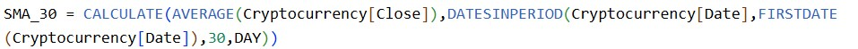
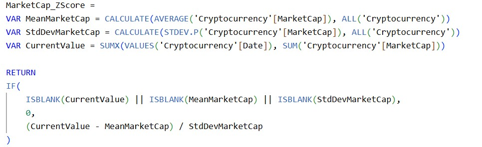
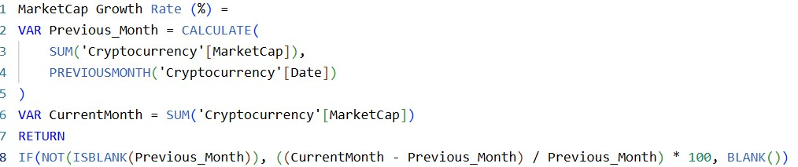
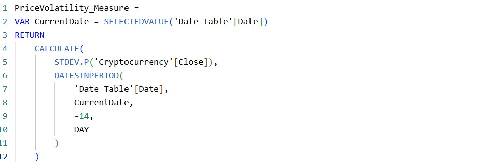
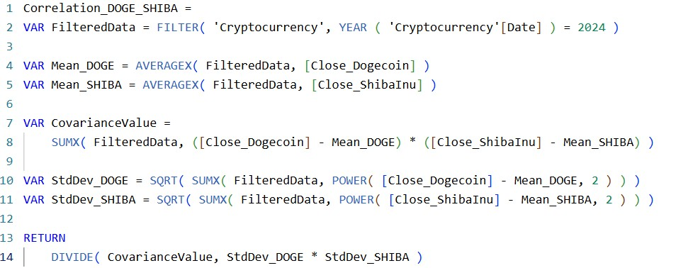
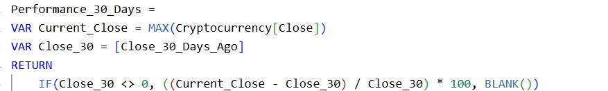

Introduction
This project focuses on integrating, loading, transforming, cleaning and analyzing data on three cryptocurrencies (Dogecoin, Shiba Inu and Solana) to get insights into blockchain technologies, investment strategies, and financial analytics using real world data. By combining the data of all coins and conducting analysis with power bi tool, the project aims for analyzing market trends, price volatility and correlations.
Objective
- Integrating individual .csv file (300 + rows) approx. containing cryptocurrency data for three coins and to load google trends data file(.csv).
- Transforming the data set into power query editor and data cleaning is done to handle duplicates, missing data and to standardize formats .
- Merge three cryptocurrency data into single file for ease of analysis.
- Calculate correlation and close price measures required for analysis.
- To get insights from SMA analysis, correlation trends, google interest,wikipedia views and performance trends etc.
Methodology
-
Data Collection
Collected .csv files for each cryptocurrency was taken from coinmarketcap.com for the year 2024.Google interest and Wikipedia views data for individual digital coins was collected from google trends.com and Wikipedia.com respectively.
-
Data Loading and Transformation
The collected .csv files is loaded in power bi and then transformed into Power Query data where data cleaning is done there.
-
Data Cleaning
Data set1(Cryptocurrency):
- Removed unnecessary columns which are not used in analysis.
- Reordered columns for the ease of analysis.
- Changed Column headers for more readability.
- Changed and added custom column for data from datetime column.
- All the above changes are done on individual currency and merged into single query.
Data set2(Google Trends):
- First row was promoted as headers.
- Week column was changed to date type.
Data set3(Wikipedia Views):
- First row was promoted as headers.
- Relevant column name was given and rows with 2024 data was filtered.
-
Data Export
The data after cleaning was saved and applied and then transformed to power bi desktop for further calculations and examination.
-
Measure calculations
Certain measures like correlation, close price high,performance on last 1,2,3,and 6 months,price volatality,market growth rate %,,marketcap z score were calculated.
-
Data Visualization
Each analysis is represented with line charts, bar charts and relevant insights are delivered from each..
-
Analysis
Trend Analysis:
A Simple Moving Average (SMA) smooths price data over a certain period which helps to identify trends and reduce short-term price fluctuations.

Market Capital Analysis:
Market capitalization is the total value of company shares. It’s the key metric that investors use to evaluate company size and worth.
Z score is calculated to identify extreme price movements or sudden spikes in trading volume .


Sentiment Analysis:
People interest across google and wikepedia are compared with price volatality to check how pubic hype and social media impacts price changes

Performance and Correlation Insights:
Correlation Insight:The correlation values indicate how their prices move relative to each other.1 refers to strong correlation and 0 referst o poor correlation
Performance Insight:Performance for the last 1,2,3,6 months are compared to get best and poor performer over that period.


Results
- Data has been loaded successfully and then transformed to Power query editor.
- Data cleaning process is done to ensure quality and integrity of dataset by renaming, removing, reordering and merging datasets.
- Measures were calculated for further analysis.
- Moving Average Analysis:
- The current price of Dogecoin is above 0.08, it suggests an uptrend (bullish momentum)which indicate a potential buying opportunity.
- For Shiba Inu current price is above 30day sma it suggests an uptrend.
- Similarly for Shiba Inu current price is above 30day sma that is it suggests an uptrend.
- Average Market Capital:
- Solana has the highest market capitalization (~$71.35B), making it the most dominant cryptocurrency among the three indicating higher investor confidence and strong liquidity allowing traders to enter and exit positions easily.
- Dogecoin holds a significant market cap(~$23.61B) but is far below Solana. The market cap suggests that Dogecoin still has a strong presence in the crypto world, but its growth is more speculative.
- Shiba Inu has the smallest market cap(~$11.39B), making it a more speculative investment.
- Market Capital Growth Rate %:
- Solana had the fastest market cap growth in 2024, showing strong investor interest and possible wider adoption. Dogecoin picked up later in the year, likely boosted by media or social buzz. Shiba Inu grew the least, showing weaker momentum compared to the others.
- Correlation Analysis:
- None of these pairs are highly correlated (values are below 0.5), meaning their prices don’t always move together.
- Performance Analysis:
- Dogecoin has shown the biggest growth recently, but it's also the most risky with big price swings. Shiba Inu is picking up speed, especially in the last month, making it a good short-term option. Solana is growing steadily and is better for those looking for a more stable, long-term investment.
- Sentiment Analysis:
- People’s interest, shown by Google and Wikipedia searches, often matches how much a cryptocurrency’s price goes up and down—especially for popular coins like Dogecoin and Shiba Inu. Dogecoin’s price changes a lot when influencers talk about it, while Solana’s price moves more because of market factors, with people looking it up after big changes. In general, when a coin gets a lot of attention online, its price often becomes more volatile.
Summary
- Tools Power BI
- Objective To Analyze Cryptocurrency data(Dogecoin, Shiba Inu and Solana)for year 2024.
- Data Stages Data Collection Data Loading and Transformation Data Cleaning Data Export Calculated Measures Data Visualization Data Analysis Results